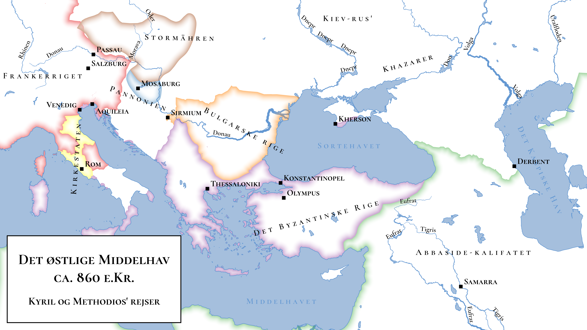

Topographic maps
Objectives
After following this practical, you should be able to:
- Use map services to obtain premade topographic maps in QGIS
- Style vector and raster data to produce a base map
- Combine raster digital elevation model (DEM) layers to produce a relief map
Prerequisites
- Styling vector layers as basemap (Video, Martin Hinz)
- Styling DEM as a basemap (Video, Martin Hinz)
Practical
- Cyril and Methodius
- cyril_methodius_places.csv – names and coordinates of major locations in the journeys of Cyril and Methodius
- darmc_kingdoms_ad814.geojson – kingdoms of Europe in 814, from DARMC
- darmc_towns_ad814.geojson – major towns and cities of Europe in 814, from DARMC
- Natural Earth Data <https://www.naturalearthdata.com/>
Map services
Map services are pre-compiled map layers distributed over the internet. They are often the most convinient way to get a quick topographic base map. There is a very, very wide selection of map services out there, including generic topographic maps (e.g. ESRI’s series), shaded relief (ESRI World Topo), street maps (e.g. OpenStreetMap), satellite imagery (e.g. Sentinel, Landsat) and specialised remote sensing data (e.g.OpenWeatherMap). The QGIS plugin QuickMapServices offers a very convenient index for publicly-available map services.
Important note: base maps from these services are subject to copyright and almost always come with licensing conditions. You should ensure you have permission to reproduce the individual map service before using them in publications!
- Install and enable the QuickMapServices plugin for QGIS.
- Using Web → QuickMapServices, add the standard OpenStreetMap (OSM) layer to your project and navigate to the area around Bern
- Q: What could we use this kind of map for in archaeology?
- Q: Apart from licensing concerns, why else might we not want to rely on map services for base maps?
- Using the search function of QuickMapServices, find layers suitable as a base map for:
- A distribution map of prehistoric sites around Bern
- A plan of an medieval site within the city of Bern
- Helping a survey team find their way around the area around Bern
Use Project → Import/Export to save an image of your three maps, briefly explaining why you chose the base layer you did.
Topographic base maps
Reproduce the following map as closely as you can. It is intended to illustrate the historical context of the journeys of Cyril and Methodius, two 9th century Byzantine monks credited with introducing Christianity to the Slavic world and devising the Cyrillic alphabet (or technically it’s funky-looking predecessor, Glagolitic).
You will need the ‘Cyril and Methodius’ datasets and supplementary data from Natural Earth.

Save an image of your reproduced map to your portfolio.
- Q: How could this map be improved?
Relief maps
A relief map is a special class of elevation map that is very widely used as both a base map and an illustrative, topographic map. They represent (raster) elevation maps They can look really nice—or they can look awful—it takes practice!
- Download SRTM elevation data for Switzerland from <http://dwtkns.com/srtm/>
- Add it to you project along with river, lake, ocean, and country border data from Natural Earth. Style the vector layers appropriately.
- Style the DEM layer with single band pseudocolor symbology and the built in ‘spectral’ colour ramp
- Change the mode to ‘equal interval’ and experiment with adding more classes.
- Change the interpolation to ‘discrete’ and again experiment with different number of classes.
- Q: What is the difference between continuous and discrete interpolation in this context?
Save an image of a map using the ‘spectral’ ramp for your portfolio.
- Create a new color ramp for the DEM layer, using one of the options for topography in the ‘cpt-city’ catalogue.
- Adjust the min/max values and classes to best show the underlying topography.
- Duplicate the DEM layer and change its symbology to ‘hillshade’
- Q: What to the ‘altitude’, ‘azimuth’, and ‘z-factor’ options do?
- Under transparency, adjust the blend mode (try ‘multiple’) and opacity of the layer until it blends well with the underlying terrain colours.
- Disable the underlying DEM layer so that just the hillshade is visible.
- Q: What could this type of base map be used for?
Save an image of your shaded relief map for your portfolio.